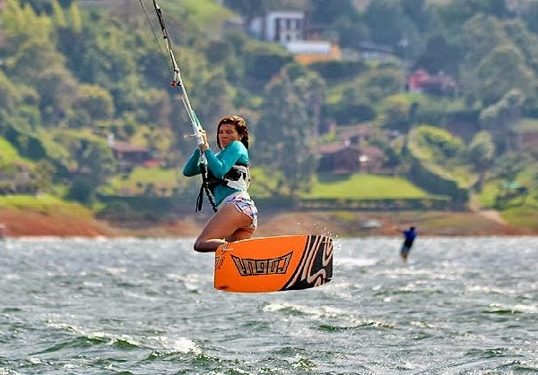
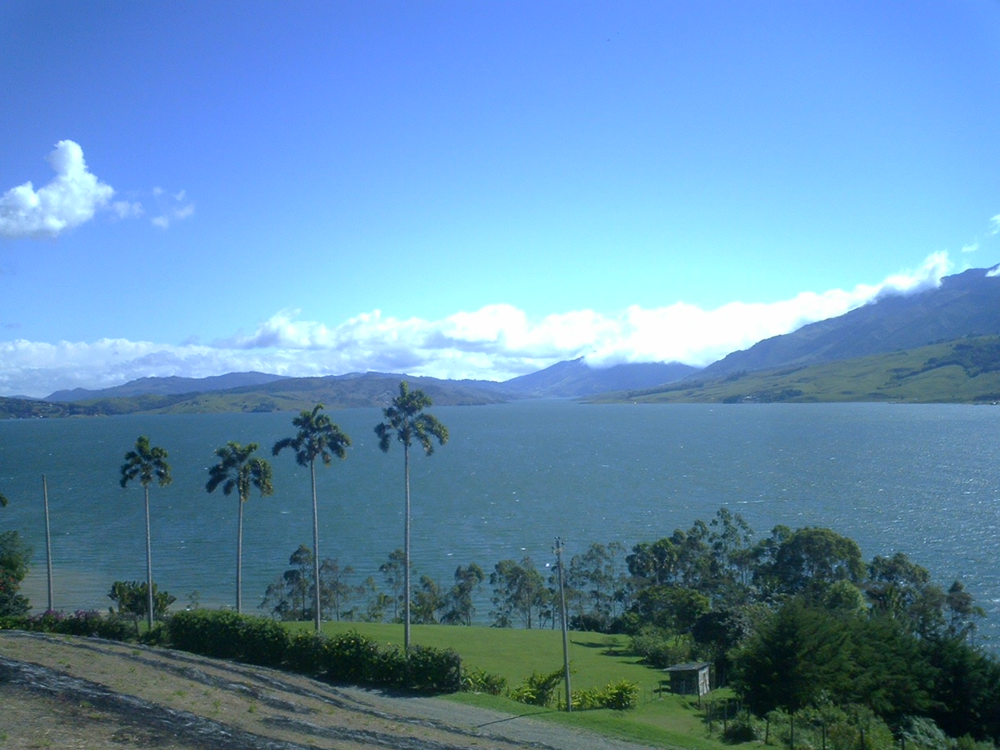
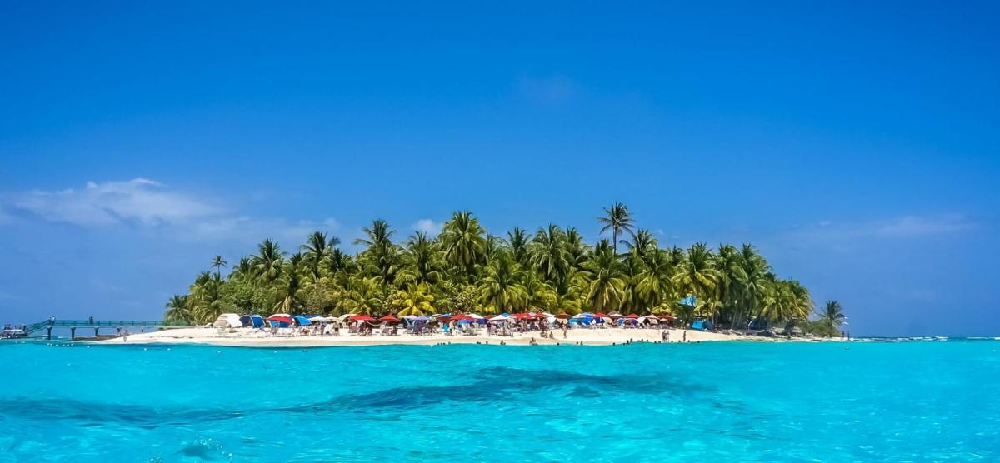

Capitale mondiale de la salsa
Cali est une ville vibrante connue pour sa musique, sa culture et sa gastronomie.
C'est l'épicentre de la salsa et elle offre un mélange unique d'histoire et de modernité.
Quelques lieux emblématiques :
Quartier San Antonio :
Un lieu bohème avec une architecture coloniale, des rues pavées et une atmosphère artistique.

Christ Roi :
Une statue monumentale avec une vue spectaculaire sur la ville.

Zoo de Cali :
Considéré comme l'un des meilleurs d'Amérique Latine.

Activités recommandées :
Cours de salsa dans des clubs emblématiques comme La Topa Tolondra, circuits gastronomiques pour déguster des plats typiques comme le sancocho de poule et les foires de Cali en fin d'année.

Paradis des sports nautiques
Ce réservoir artificiel est célèbre pour ses vents constants, idéals pour les sports nautiques comme la planche à voile et le kitesurf.
Principales attractions :
Activités aquatiques :
Planche à voile, balades en bateau et jet ski.

Paysages naturels :
Entouré de montagnes et de végétation luxuriante.
Activités recommandées :
Camping au bord du lac pour profiter de la nature, balades en ferry pour explorer le réservoir, toute l'année est une bonne période pour visiter grâce à son climat stable.


Le joyau des Caraïbes
Cartagena est une destination historique et culturelle avec des plages paradisiaques et une riche architecture coloniale.
Principales attractions :
Ville fortifiée :
Patrimoine mondial de l'UNESCO.
Château de San Felipe de Barajas :
Une forteresse historique avec des vues impressionnantes.
Îles du Rosaire :
Parfaites pour profiter des eaux cristallines et des activités aquatiques.
Activités recommandées :
Promenades dans les rues pavées du centre historique, dégustation de plats typiques comme le riz à la noix de coco et le poisson frit. Meilleure période pour visiter : entre décembre et mars, lorsque le climat est plus sec.

Île paradisiaque des Caraïbes
Célèbre pour sa mer aux sept couleurs. C'est une destination idéale pour profiter de plages de sable blanc, pratiquer des sports nautiques comme la plongée et le snorkeling, et découvrir sa riche culture afro-caribéenne. Quelques lieux emblématiques :
Johnny Cay :
Un îlot proche avec des plages spectaculaires.

Hoyo Soplador :
Une curiosité naturelle où l'eau et l'air jaillissent d'un trou dans la roche.
La Piscinita :
Un endroit parfait pour nager et observer les poissons tropicaux.
Caverne de Morgan :
Une grotte pleine de légendes de pirates et de trésors cachés.

Région du Café
L'Eje Cafetero, classé au patrimoine mondial de l'UNESCO, est une région montagneuse connue pour ses paysages de plantations de café et ses villages pittoresques. Elle est composée des départements de Quindío, Risaralda et Caldas.
Vallée de Cocora
Lieu emblématique des palmiers de cire, l'arbre national de la Colombie.

Salento et Filandia
Villages colorés avec une architecture traditionnelle et une délicieuse gastronomie.

Parc du Café
Un parc à thème qui combine attractions mécaniques et culture du café.
Thermes de Santa Rosa de Cabal
Un endroit idéal pour se détendre dans des eaux thermales entourées de nature.


Visiter l'Eje Cafetero est une expérience incontournable pour découvrir la culture, la nature et l'hospitalité colombiennes.